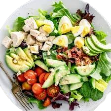

- 4 cups mixed salad greens
- 1 cup cherry tomatoes, halved
- 1 cucumber, sliced
- 1/4 red onion, thinly sliced
- 1/2 cup shredded carrots
- 1/4 cup olive oil
- 2 tablespoons balsamic vinegar
- Salt & pepper
-
- Wash and dry all vegetables thoroughly.
- Slice the cherry tomatoes, cucumber, and red onion.
- Shred the carrots if not pre-shredded.
- In a large bowl, combine salad greens, tomatoes, cucumber, onion, and carrots.
- For added crunch, consider tossing in some toasted nuts or seeds.
-
- In a small bowl, whisk together olive oil, balsamic vinegar, salt, and pepper.
- Taste and adjust seasoning as desired.
- For a creamier dressing, add a teaspoon of Dijon mustard or honey.
-
- Drizzle dressing over the salad and toss gently to combine.
- Serve immediately for the freshest taste.
- Enjoy your crisp and refreshing homemade salad!